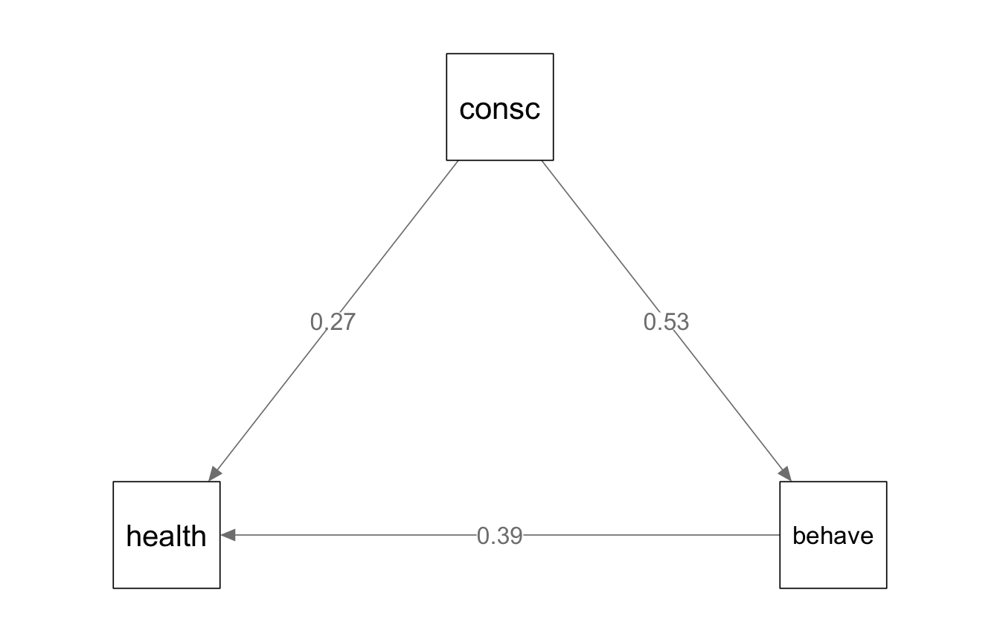
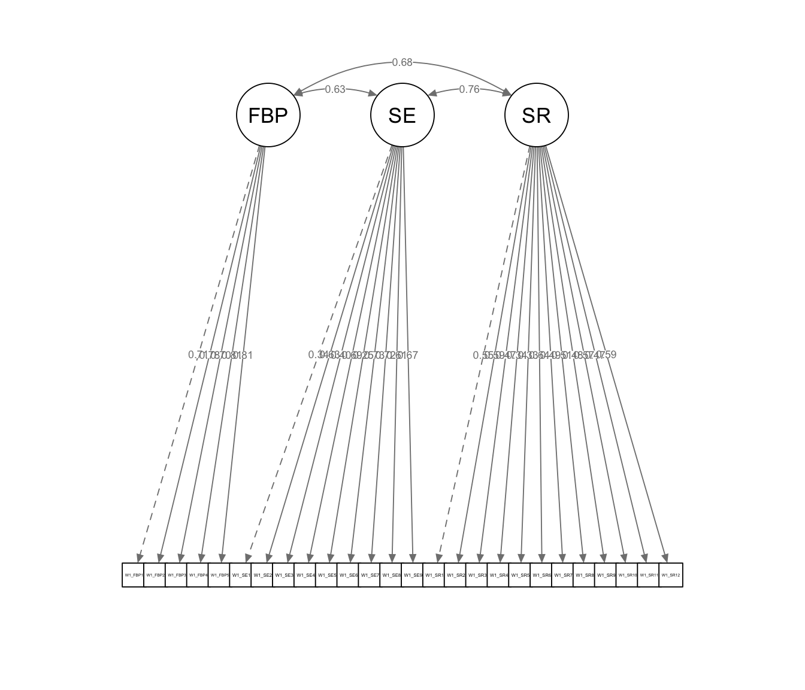
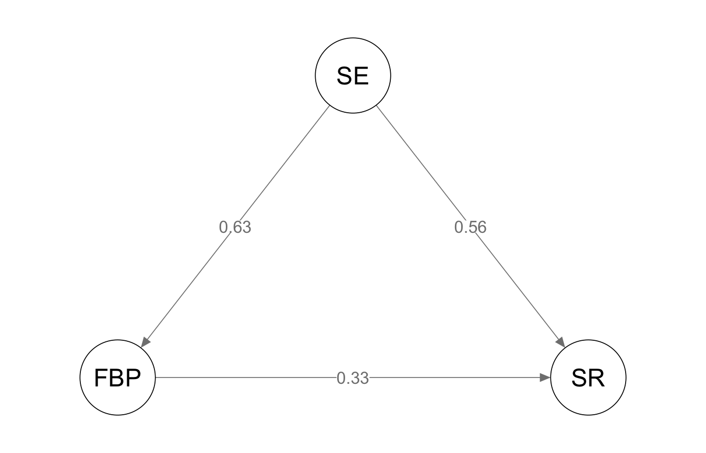

library(tidyverse)
library(haven)
library(lavaan)
library(semPlot)12 Structural Equation Modeling II: Mediation
A mediation model asks how or why a predictor affects an outcome. It proposes that some or all of the effect of a predictor (X) travels through a third variable, the mediator (M), on its way to the outcome (Y). In this chapter, we estimate mediation models in lavaan. We start with observed variables and then extend the same model to latent variables.
12.1 The paths in a mediation model
A simple mediation model has three paths:
- The a path runs from X to M.
- The b path runs from M to Y, controlling for X.
- The c′ path (c-prime) runs from X to Y, controlling for M. This is the direct effect.
From these paths, we can build two more quantities:
- The indirect effect is the product a × b. It is the part of the effect of X that passes through M.
- The total effect is c′ + ab. It equals the slope you would get by regressing Y on X alone (the c path).
12.2 Mediation with observed variables
12.2.1 The data
Note: These are simulated data for 500 respondents. All three variables are scale scores centered near zero.
The model proposes that conscientiousness (consc) is related to overall physical health (health) partly because conscientious people tend to engage in more health-related behaviors (behave).
health <- read_dta("data/health_old.dta")
glimpse(health)Rows: 500
Columns: 4
$ id <dbl> 1, 2, 3, 4, 5, 6, 7, 8, 9, 10, 11, 12, 13, 14, 15, 16, 17, 18, …
$ consc <dbl> -0.534766, 0.522444, 1.581126, -0.458229, 0.275520, -0.893238, …
$ behave <dbl> 0.099598, 0.958975, 2.484509, 0.885141, -0.840232, -1.465911, -…
$ health <dbl> -0.886676, 2.618775, 3.084666, 0.249537, -2.079687, -0.025422, …12.2.2 Specifying the model
The model syntax has three parts. First, we write the regressions and attach a label to each path with *. Here, c * labels the direct path, a * the path to the mediator, and b * the path from the mediator. Second, we use the := operator to define new parameters from those labels: the indirect effect ab and the total effect. Because lavaan estimates these defined parameters directly, it also gives us their standard errors and p-values.
med_model <- '
# direct effect
health ~ c * consc
# mediator
behave ~ a * consc
health ~ b * behave
# indirect effect (a * b)
ab := a * b
# total effect
total := c + (a * b)
'A few variables have missing values. The option missing = "ml" uses full information maximum likelihood (FIML) to keep every case in the analysis. Adding fixed.x = FALSE extends FIML to the predictor, consc, as well. Without it, lavaan drops the five cases missing consc.
med_fit <- sem(med_model, data = health, missing = "ml", fixed.x = FALSE)
summary(med_fit, standardized = TRUE)lavaan 0.7-2 ended normally after 9 iterations
Estimator ML
Optimization method NLMINB
Number of model parameters 9
Number of observations 500
Number of missing patterns 4
Model Test User Model:
Test statistic 0.000
Degrees of freedom 0
Parameter Estimates:
Standard errors Standard
Information Observed
Observed information based on Hessian
Regressions:
Estimate Std.Err z-value P(>|z|) Std.lv Std.all
health ~
consc (c) 0.269 0.043 6.228 0.000 0.269 0.270
behave ~
consc (a) 0.528 0.038 13.939 0.000 0.528 0.531
health ~
behave (b) 0.389 0.043 8.996 0.000 0.389 0.389
Intercepts:
Estimate Std.Err z-value P(>|z|) Std.lv Std.all
.health 0.028 0.051 0.541 0.589 0.028 0.020
.behave 0.030 0.053 0.569 0.569 0.030 0.022
consc -0.011 0.063 -0.172 0.864 -0.011 -0.008
Variances:
Estimate Std.Err z-value P(>|z|) Std.lv Std.all
.health 1.298 0.082 15.746 0.000 1.298 0.664
.behave 1.405 0.089 15.733 0.000 1.405 0.718
consc 1.973 0.125 15.736 0.000 1.973 1.000
Defined Parameters:
Estimate Std.Err z-value P(>|z|) Std.lv Std.all
ab 0.206 0.027 7.549 0.000 0.206 0.207
total 0.475 0.039 12.076 0.000 0.475 0.477All three paths are positive and significant. The indirect effect (ab) is 0.21, and the total effect is 0.47. Thus, about 43% of the total effect of conscientiousness on health (0.21 / 0.47) appears to run through health behaviors. The direct effect remains significant, so health behaviors account for only part of the relationship. This pattern is often called partial mediation.
This model has zero degrees of freedom: it estimates every possible path among the three variables. Such a model is just-identified. It fits the data perfectly by definition, so fit statistics like CFI and RMSEA are not informative here.
lavInspect() returns the proportion of variance explained in each endogenous variable:
lavInspect(med_fit, "r2")health behave
0.336 0.282 12.2.3 Bootstrapped confidence intervals
The standard error for the indirect effect assumes that ab is normally distributed. Because it is a product of two estimates, its sampling distribution is often skewed, especially in small samples. A bootstrap confidence interval does not rely on that assumption. For this reason, it is the recommended way to test an indirect effect.
Bootstrapping refits the model to many resampled datasets, so this step can take a moment. Setting a seed makes the results reproducible.
set.seed(663)
med_boot <- sem(med_model, data = health, missing = "ml", fixed.x = FALSE,
se = "bootstrap", bootstrap = 1000)
parameterEstimates(med_boot, boot.ci.type = "perc") |>
filter(op %in% c("~", ":="))The 95% percentile interval for ab does not include zero. This supports the conclusion that the indirect effect is statistically significant.
12.2.4 Path diagram
semPaths(med_fit, whatLabels = "std", intercepts = FALSE, residuals = FALSE,
nCharNodes = 0, sizeMan = 12, edge.label.cex = 1.2)
12.3 Mediation with latent variables
Mediation models can also link latent variables. This takes two steps, much like the full SEM models in Chapter 11. First, we specify and check a measurement model. Second, we add the structural (mediation) paths.
12.3.1 The data
The writing data include 1,509 students’ responses to three writing-related scales, each rated on a 4-point scale:
- Feedback perceptions (
FBP): 5 items - Writing self-efficacy (
SE): 9 items - Writing self-regulation (
SR): 12 items
The model proposes that self-efficacy is related to self-regulation partly through students’ perceptions of feedback.
Note: Students in these data are grouped within 65 teachers (W1_TNum). Students who share a teacher may be more alike than students who do not, and this can make standard errors too small. For simplicity, the models in this chapter ignore that nesting. Multilevel SEM can account for it.
writing <- read_dta("data/writing.dta")
glimpse(writing)Rows: 1,509
Columns: 27
$ W1_FBP1 <dbl> 3, 4, 4, 3, 4, 4, 3, 4, 4, 4, 3, 4, 4, 4, 1, 4, 3, 3, 2, 4, 3,…
$ W1_FBP2 <dbl> 3, 4, 2, 3, 2, 3, 3, 2, 3, 4, 2, 4, 1, 4, 1, 4, 3, 2, 2, 4, 3,…
$ W1_FBP3 <dbl> 4, 4, 4, 3, 4, 4, 2, 1, 3, 4, 3, 4, 3, 4, 1, 4, 2, 2, 3, 4, 3,…
$ W1_FBP4 <dbl> 3, 4, 4, 3, 3, 4, 3, 2, 3, 4, 3, 4, 3, 4, 1, 4, 2, 2, 2, 4, 2,…
$ W1_FBP5 <dbl> 2, 4, 3, 3, 2, 2, 2, 2, 2, 4, 1, 4, 1, 4, 1, 3, 2, 3, 3, 4, 2,…
$ W1_SE1 <dbl> 4, 4, 3, 3, 3, 4, 4, 4, 4, 4, 3, 3, 4, 3, 4, 4, 2, 4, 4, 4, 2,…
$ W1_SE2 <dbl> 4, 4, 2, 2, 4, 4, 2, 2, 4, 4, 3, 3, 3, 3, 2, 4, 2, 4, 1, 4, 3,…
$ W1_SE3 <dbl> 3, 3, 3, 2, 4, 3, 4, 4, 4, 4, 3, 4, 4, 3, 3, 3, 3, 4, 4, 4, 2,…
$ W1_SE4 <dbl> 3, 2, 2, 2, 4, 2, 3, 2, 2, 4, 2, 3, 2, 3, 2, 1, 2, 2, 2, 4, 3,…
$ W1_SE5 <dbl> 4, 2, 3, 2, 3, 4, 3, 4, 4, 4, 3, 3, 4, 2, 4, 2, 2, 3, 3, 4, 4,…
$ W1_SE6 <dbl> 2, 4, 2, 2, 4, 3, 3, 2, 4, 3, 3, 3, 3, 3, 1, 3, 2, 4, 2, 4, 1,…
$ W1_SE7 <dbl> 4, 4, 3, 3, 4, 4, 3, 3, 4, 4, 3, 3, 4, 3, 1, 2, 2, 3, 3, 4, 4,…
$ W1_SE8 <dbl> 2, 3, 3, 3, 2, 3, 3, 2, 3, 3, 2, 4, 2, 3, 1, 2, 3, 2, 2, 4, 1,…
$ W1_SE9 <dbl> 3, 3, 3, 2, 4, 4, 3, 3, 2, 4, 3, 4, 4, 3, 1, 2, 3, 2, 2, 4, 4,…
$ W1_SR1 <dbl> 3, 4, 4, 2, 3, 2, 4, 3, 4, 4, 3, 3, 1, 4, 2, 3, 3, 4, 4, 4, 2,…
$ W1_SR2 <dbl> 2, 2, 3, 2, 2, 3, 2, 2, 2, 1, 3, 3, 1, 3, 1, 3, 2, 2, 1, 3, 2,…
$ W1_SR3 <dbl> 4, 4, 3, 2, 1, 2, 3, 1, 4, 2, 3, 4, 1, 3, 2, 4, 3, 2, 3, 4, 3,…
$ W1_SR4 <dbl> 4, 4, 3, 2, 2, 4, 4, 2, 3, 4, 2, 3, 2, 2, 1, 4, 3, 3, 4, 4, 2,…
$ W1_SR5 <dbl> 4, 3, 4, 2, 2, 2, 3, 2, 2, 1, 4, 2, 2, 4, 2, 3, 2, 4, 2, 2, 3,…
$ W1_SR6 <dbl> 2, 4, 1, 2, 3, 2, 2, 2, 2, 3, 3, 4, 1, 3, 2, 3, 2, 2, 1, 3, 1,…
$ W1_SR7 <dbl> 4, 3, 4, 3, 4, 3, 3, 3, 2, 4, 3, 4, 4, 2, 2, 4, 2, 2, 4, 3, 2,…
$ W1_SR8 <dbl> 2, 2, 3, 2, 3, 2, 3, 3, 3, 1, 3, 3, 2, 3, 1, 2, 3, 2, 2, 4, 4,…
$ W1_SR9 <dbl> 3, 3, 4, 3, 4, 2, 3, 3, 2, 4, 2, 3, 1, 3, 1, 3, 1, 4, 3, 4, 3,…
$ W1_SR10 <dbl> 4, 4, 4, 2, 3, 2, 2, 1, 3, 1, 3, 4, 1, 4, 1, 3, 2, 3, 2, 4, 2,…
$ W1_SR11 <dbl> 4, 3, 4, 4, 3, 2, 4, 4, 4, 3, 2, 3, 2, 3, 3, 4, 3, 2, 4, 3, 3,…
$ W1_SR12 <dbl> 4, 4, 4, 2, 4, 3, 3, 2, 3, 4, 4, 4, 1, 3, 1, 2, 2, 4, 2, 4, 2,…
$ W1_TNum <dbl> 71, 34, 63, 52, 81, 71, 71, 71, 83, 70, 84, 83, 76, 60, 85, 80…12.3.2 Step 1: The measurement model
We start with a confirmatory factor analysis (Chapter 10) of all three scales:
cfa_model <- '
FBP =~ W1_FBP1 + W1_FBP2 + W1_FBP3 + W1_FBP4 + W1_FBP5
SE =~ W1_SE1 + W1_SE2 + W1_SE3 + W1_SE4 + W1_SE5 + W1_SE6 +
W1_SE7 + W1_SE8 + W1_SE9
SR =~ W1_SR1 + W1_SR2 + W1_SR3 + W1_SR4 + W1_SR5 + W1_SR6 +
W1_SR7 + W1_SR8 + W1_SR9 + W1_SR10 + W1_SR11 + W1_SR12
'
cfa_fit <- cfa(cfa_model, data = writing, missing = "ml")
summary(cfa_fit, fit.measures = TRUE, standardized = TRUE)lavaan 0.7-2 ended normally after 96 iterations
Estimator ML
Optimization method NLMINB
Number of model parameters 81
Number of observations 1509
Number of missing patterns 27
Model Test User Model:
Test statistic 1988.299
Degrees of freedom 296
P-value (Chi-square) 0.000
Model Test Baseline Model:
Test statistic 13338.258
Degrees of freedom 325
P-value 0.000
User Model versus Baseline Model:
Comparative Fit Index (CFI) 0.870
Tucker-Lewis Index (TLI) 0.857
Robust Comparative Fit Index (CFI) 0.870
Robust Tucker-Lewis Index (TLI) 0.857
Loglikelihood and Information Criteria:
Loglikelihood user model (H0) -48264.380
Loglikelihood unrestricted model (H1) -47270.231
Akaike (AIC) 96690.761
Bayesian (BIC) 97121.616
Sample-size adjusted Bayesian (SABIC) 96864.301
Root Mean Square Error of Approximation:
RMSEA 0.062
90 Percent confidence interval - lower 0.059
90 Percent confidence interval - upper 0.064
P-value H_0: RMSEA <= 0.050 0.000
P-value H_0: RMSEA >= 0.080 0.000
Robust RMSEA 0.062
90 Percent confidence interval - lower 0.059
90 Percent confidence interval - upper 0.064
P-value H_0: Robust RMSEA <= 0.050 0.000
P-value H_0: Robust RMSEA >= 0.080 0.000
Standardized Root Mean Square Residual:
SRMR 0.050
Goodness of Fit Index:
Goodness of Fit Index (GFI) 0.921
90 Percent confidence interval - lower 0.914
90 Percent confidence interval - upper 0.927
Robust GFI 0.920
90 Percent confidence interval - lower 0.914
90 Percent confidence interval - upper 0.926
Parameter Estimates:
Standard errors Standard
Information Observed
Observed information based on Hessian
Latent Variables:
Estimate Std.Err z-value P(>|z|) Std.lv Std.all
FBP =~
W1_FBP1 1.000 0.633 0.707
W1_FBP2 1.276 0.047 27.173 0.000 0.807 0.779
W1_FBP3 1.117 0.044 25.105 0.000 0.707 0.705
W1_FBP4 1.194 0.040 29.778 0.000 0.755 0.814
W1_FBP5 1.416 0.050 28.118 0.000 0.896 0.811
SE =~
W1_SE1 1.000 0.243 0.343
W1_SE2 2.274 0.190 11.941 0.000 0.552 0.625
W1_SE3 1.293 0.126 10.291 0.000 0.314 0.396
W1_SE4 2.873 0.236 12.166 0.000 0.697 0.695
W1_SE5 0.852 0.111 7.679 0.000 0.207 0.247
W1_SE6 2.654 0.214 12.391 0.000 0.644 0.729
W1_SE7 2.552 0.207 12.308 0.000 0.619 0.718
W1_SE8 2.559 0.217 11.767 0.000 0.621 0.609
W1_SE9 2.657 0.220 12.106 0.000 0.645 0.670
SR =~
W1_SR1 1.000 0.490 0.550
W1_SR2 1.201 0.070 17.251 0.000 0.588 0.588
W1_SR3 1.026 0.070 14.625 0.000 0.503 0.471
W1_SR4 0.738 0.065 11.329 0.000 0.361 0.342
W1_SR5 0.729 0.066 11.120 0.000 0.357 0.335
W1_SR6 1.344 0.074 18.180 0.000 0.658 0.643
W1_SR7 0.931 0.062 15.106 0.000 0.456 0.489
W1_SR8 1.068 0.068 15.638 0.000 0.523 0.511
W1_SR9 1.036 0.070 14.878 0.000 0.507 0.480
W1_SR10 1.228 0.073 16.847 0.000 0.601 0.570
W1_SR11 0.842 0.057 14.847 0.000 0.412 0.471
W1_SR12 1.320 0.077 17.073 0.000 0.646 0.586
Covariances:
Estimate Std.Err z-value P(>|z|) Std.lv Std.all
FBP ~~
SE 0.096 0.009 10.467 0.000 0.627 0.627
SR 0.210 0.015 14.127 0.000 0.679 0.679
SE ~~
SR 0.091 0.009 10.191 0.000 0.764 0.764
Intercepts:
Estimate Std.Err z-value P(>|z|) Std.lv Std.all
.W1_FBP1 3.394 0.023 147.261 0.000 3.394 3.792
.W1_FBP2 2.941 0.027 110.275 0.000 2.941 2.840
.W1_FBP3 3.232 0.026 125.156 0.000 3.232 3.224
.W1_FBP4 3.245 0.024 135.924 0.000 3.245 3.500
.W1_FBP5 2.800 0.028 98.440 0.000 2.800 2.534
.W1_SE1 3.552 0.018 194.684 0.000 3.552 5.018
.W1_SE2 2.963 0.023 130.449 0.000 2.963 3.359
.W1_SE3 3.355 0.020 164.465 0.000 3.355 4.234
.W1_SE4 2.862 0.026 110.737 0.000 2.862 2.853
.W1_SE5 3.133 0.022 145.393 0.000 3.133 3.744
.W1_SE6 3.084 0.023 135.652 0.000 3.084 3.493
.W1_SE7 3.166 0.022 142.529 0.000 3.166 3.670
.W1_SE8 2.751 0.026 104.818 0.000 2.751 2.698
.W1_SE9 2.903 0.025 117.137 0.000 2.903 3.016
.W1_SR1 3.206 0.023 139.602 0.000 3.206 3.601
.W1_SR2 2.576 0.026 99.917 0.000 2.576 2.574
.W1_SR3 2.710 0.027 98.553 0.000 2.710 2.539
.W1_SR4 2.815 0.027 103.474 0.000 2.815 2.665
.W1_SR5 2.631 0.027 95.762 0.000 2.631 2.466
.W1_SR6 2.542 0.026 96.493 0.000 2.542 2.485
.W1_SR7 3.109 0.024 129.462 0.000 3.109 3.336
.W1_SR8 2.789 0.026 105.833 0.000 2.789 2.725
.W1_SR9 2.845 0.027 104.595 0.000 2.845 2.695
.W1_SR10 2.721 0.027 100.079 0.000 2.721 2.577
.W1_SR11 3.179 0.023 141.229 0.000 3.179 3.636
.W1_SR12 2.981 0.028 105.010 0.000 2.981 2.704
Variances:
Estimate Std.Err z-value P(>|z|) Std.lv Std.all
.W1_FBP1 0.401 0.017 23.683 0.000 0.401 0.500
.W1_FBP2 0.422 0.019 21.667 0.000 0.422 0.393
.W1_FBP3 0.506 0.021 24.067 0.000 0.506 0.503
.W1_FBP4 0.290 0.015 19.961 0.000 0.290 0.337
.W1_FBP5 0.418 0.021 20.310 0.000 0.418 0.342
.W1_SE1 0.442 0.016 26.851 0.000 0.442 0.883
.W1_SE2 0.474 0.019 24.727 0.000 0.474 0.609
.W1_SE3 0.529 0.020 26.663 0.000 0.529 0.843
.W1_SE4 0.520 0.022 23.367 0.000 0.520 0.517
.W1_SE5 0.658 0.024 27.179 0.000 0.658 0.939
.W1_SE6 0.365 0.016 22.449 0.000 0.365 0.468
.W1_SE7 0.361 0.016 22.862 0.000 0.361 0.485
.W1_SE8 0.654 0.026 24.813 0.000 0.654 0.629
.W1_SE9 0.511 0.021 24.013 0.000 0.511 0.551
.W1_SR1 0.553 0.022 25.348 0.000 0.553 0.698
.W1_SR2 0.656 0.027 24.700 0.000 0.656 0.655
.W1_SR3 0.887 0.034 26.074 0.000 0.887 0.778
.W1_SR4 0.986 0.037 26.824 0.000 0.986 0.883
.W1_SR5 1.011 0.038 26.842 0.000 1.011 0.888
.W1_SR6 0.613 0.026 23.809 0.000 0.613 0.586
.W1_SR7 0.660 0.026 25.844 0.000 0.660 0.761
.W1_SR8 0.774 0.030 25.707 0.000 0.774 0.739
.W1_SR9 0.857 0.033 26.025 0.000 0.857 0.769
.W1_SR10 0.753 0.030 25.126 0.000 0.753 0.676
.W1_SR11 0.595 0.023 26.089 0.000 0.595 0.778
.W1_SR12 0.798 0.032 24.925 0.000 0.798 0.656
FBP 0.400 0.027 15.012 0.000 1.000 1.000
SE 0.059 0.009 6.378 0.000 1.000 1.000
SR 0.240 0.022 10.738 0.000 1.000 1.000Fit is mixed. RMSEA (0.062) and SRMR (0.050) fall within common guidelines, but CFI (0.87) and TLI (0.86) are below the usual 0.90 to 0.95 range. In a real analysis, we would look for the source of misfit (for example, items with weak loadings or correlated residuals) before going further. For this demonstration, we proceed with the model as specified.
The path diagram below leaves out the intercepts and item residuals to keep it readable:
semPaths(cfa_fit, whatLabels = "std", intercepts = FALSE, residuals = FALSE,
sizeMan = 3, edge.label.cex = 0.6)
12.3.3 Step 2: The structural model
The full model combines the measurement model from Step 1 with mediation paths among the latent variables. The structural part uses the same labels and := definitions as the observed-variable model.
sem_model <- paste(cfa_model, '
# direct effect
SR ~ c * SE
# mediator
FBP ~ a * SE
SR ~ b * FBP
# indirect and total effects
ab := a * b
total := c + (a * b)
')
sem_fit <- sem(sem_model, data = writing, missing = "ml")
summary(sem_fit, fit.measures = TRUE, standardized = TRUE)lavaan 0.7-2 ended normally after 91 iterations
Estimator ML
Optimization method NLMINB
Number of model parameters 81
Number of observations 1509
Number of missing patterns 27
Model Test User Model:
Test statistic 1988.299
Degrees of freedom 296
P-value (Chi-square) 0.000
Model Test Baseline Model:
Test statistic 13338.258
Degrees of freedom 325
P-value 0.000
User Model versus Baseline Model:
Comparative Fit Index (CFI) 0.870
Tucker-Lewis Index (TLI) 0.857
Robust Comparative Fit Index (CFI) 0.870
Robust Tucker-Lewis Index (TLI) 0.857
Loglikelihood and Information Criteria:
Loglikelihood user model (H0) -48264.380
Loglikelihood unrestricted model (H1) -47270.231
Akaike (AIC) 96690.761
Bayesian (BIC) 97121.616
Sample-size adjusted Bayesian (SABIC) 96864.301
Root Mean Square Error of Approximation:
RMSEA 0.062
90 Percent confidence interval - lower 0.059
90 Percent confidence interval - upper 0.064
P-value H_0: RMSEA <= 0.050 0.000
P-value H_0: RMSEA >= 0.080 0.000
Robust RMSEA 0.062
90 Percent confidence interval - lower 0.059
90 Percent confidence interval - upper 0.064
P-value H_0: Robust RMSEA <= 0.050 0.000
P-value H_0: Robust RMSEA >= 0.080 0.000
Standardized Root Mean Square Residual:
SRMR 0.050
Goodness of Fit Index:
Goodness of Fit Index (GFI) 0.921
90 Percent confidence interval - lower 0.914
90 Percent confidence interval - upper 0.927
Robust GFI 0.920
90 Percent confidence interval - lower 0.914
90 Percent confidence interval - upper 0.926
Parameter Estimates:
Standard errors Standard
Information Observed
Observed information based on Hessian
Latent Variables:
Estimate Std.Err z-value P(>|z|) Std.lv Std.all
FBP =~
W1_FBP1 1.000 0.633 0.707
W1_FBP2 1.276 0.047 27.173 0.000 0.807 0.779
W1_FBP3 1.117 0.044 25.105 0.000 0.707 0.705
W1_FBP4 1.194 0.040 29.778 0.000 0.755 0.814
W1_FBP5 1.416 0.050 28.119 0.000 0.896 0.811
SE =~
W1_SE1 1.000 0.243 0.343
W1_SE2 2.274 0.190 11.941 0.000 0.552 0.625
W1_SE3 1.293 0.126 10.291 0.000 0.314 0.396
W1_SE4 2.873 0.236 12.166 0.000 0.697 0.695
W1_SE5 0.852 0.111 7.679 0.000 0.207 0.247
W1_SE6 2.654 0.214 12.391 0.000 0.644 0.729
W1_SE7 2.552 0.207 12.308 0.000 0.619 0.718
W1_SE8 2.559 0.217 11.768 0.000 0.621 0.609
W1_SE9 2.657 0.219 12.107 0.000 0.645 0.670
SR =~
W1_SR1 1.000 0.490 0.550
W1_SR2 1.201 0.070 17.251 0.000 0.588 0.588
W1_SR3 1.026 0.070 14.625 0.000 0.503 0.471
W1_SR4 0.738 0.065 11.329 0.000 0.361 0.342
W1_SR5 0.729 0.066 11.120 0.000 0.357 0.335
W1_SR6 1.344 0.074 18.180 0.000 0.658 0.643
W1_SR7 0.931 0.062 15.106 0.000 0.456 0.489
W1_SR8 1.068 0.068 15.638 0.000 0.523 0.511
W1_SR9 1.036 0.070 14.878 0.000 0.507 0.480
W1_SR10 1.228 0.073 16.846 0.000 0.601 0.570
W1_SR11 0.842 0.057 14.847 0.000 0.412 0.471
W1_SR12 1.320 0.077 17.073 0.000 0.646 0.586
Regressions:
Estimate Std.Err z-value P(>|z|) Std.lv Std.all
SR ~
SE (c) 1.127 0.117 9.611 0.000 0.558 0.558
FBP ~
SE (a) 1.635 0.148 11.066 0.000 0.627 0.627
SR ~
FBP (b) 0.254 0.027 9.478 0.000 0.329 0.329
Intercepts:
Estimate Std.Err z-value P(>|z|) Std.lv Std.all
.W1_FBP1 3.394 0.023 147.261 0.000 3.394 3.792
.W1_FBP2 2.941 0.027 110.275 0.000 2.941 2.840
.W1_FBP3 3.232 0.026 125.156 0.000 3.232 3.224
.W1_FBP4 3.245 0.024 135.924 0.000 3.245 3.500
.W1_FBP5 2.800 0.028 98.441 0.000 2.800 2.534
.W1_SE1 3.552 0.018 194.685 0.000 3.552 5.018
.W1_SE2 2.963 0.023 130.449 0.000 2.963 3.359
.W1_SE3 3.355 0.020 164.465 0.000 3.355 4.234
.W1_SE4 2.862 0.026 110.737 0.000 2.862 2.853
.W1_SE5 3.133 0.022 145.393 0.000 3.133 3.744
.W1_SE6 3.084 0.023 135.653 0.000 3.084 3.493
.W1_SE7 3.166 0.022 142.530 0.000 3.166 3.670
.W1_SE8 2.751 0.026 104.818 0.000 2.751 2.698
.W1_SE9 2.903 0.025 117.137 0.000 2.903 3.016
.W1_SR1 3.206 0.023 139.602 0.000 3.206 3.601
.W1_SR2 2.576 0.026 99.917 0.000 2.576 2.574
.W1_SR3 2.710 0.027 98.553 0.000 2.710 2.539
.W1_SR4 2.815 0.027 103.474 0.000 2.815 2.665
.W1_SR5 2.631 0.027 95.762 0.000 2.631 2.466
.W1_SR6 2.542 0.026 96.493 0.000 2.542 2.485
.W1_SR7 3.109 0.024 129.462 0.000 3.109 3.336
.W1_SR8 2.789 0.026 105.833 0.000 2.789 2.725
.W1_SR9 2.845 0.027 104.595 0.000 2.845 2.695
.W1_SR10 2.721 0.027 100.079 0.000 2.721 2.577
.W1_SR11 3.179 0.023 141.230 0.000 3.179 3.636
.W1_SR12 2.981 0.028 105.010 0.000 2.981 2.704
Variances:
Estimate Std.Err z-value P(>|z|) Std.lv Std.all
.W1_FBP1 0.401 0.017 23.683 0.000 0.401 0.500
.W1_FBP2 0.422 0.019 21.667 0.000 0.422 0.393
.W1_FBP3 0.506 0.021 24.067 0.000 0.506 0.503
.W1_FBP4 0.290 0.015 19.961 0.000 0.290 0.337
.W1_FBP5 0.418 0.021 20.310 0.000 0.418 0.342
.W1_SE1 0.442 0.016 26.852 0.000 0.442 0.883
.W1_SE2 0.474 0.019 24.727 0.000 0.474 0.609
.W1_SE3 0.529 0.020 26.663 0.000 0.529 0.843
.W1_SE4 0.520 0.022 23.367 0.000 0.520 0.517
.W1_SE5 0.658 0.024 27.179 0.000 0.658 0.939
.W1_SE6 0.365 0.016 22.449 0.000 0.365 0.468
.W1_SE7 0.361 0.016 22.862 0.000 0.361 0.485
.W1_SE8 0.654 0.026 24.813 0.000 0.654 0.629
.W1_SE9 0.511 0.021 24.013 0.000 0.511 0.551
.W1_SR1 0.553 0.022 25.348 0.000 0.553 0.698
.W1_SR2 0.656 0.027 24.700 0.000 0.656 0.655
.W1_SR3 0.887 0.034 26.073 0.000 0.887 0.778
.W1_SR4 0.986 0.037 26.824 0.000 0.986 0.883
.W1_SR5 1.011 0.038 26.842 0.000 1.011 0.888
.W1_SR6 0.613 0.026 23.809 0.000 0.613 0.586
.W1_SR7 0.660 0.026 25.844 0.000 0.660 0.761
.W1_SR8 0.774 0.030 25.707 0.000 0.774 0.739
.W1_SR9 0.857 0.033 26.025 0.000 0.857 0.769
.W1_SR10 0.753 0.030 25.126 0.000 0.753 0.676
.W1_SR11 0.595 0.023 26.089 0.000 0.595 0.778
.W1_SR12 0.798 0.032 24.925 0.000 0.798 0.656
.FBP 0.243 0.017 13.939 0.000 0.607 0.607
SE 0.059 0.009 6.378 0.000 1.000 1.000
.SR 0.084 0.009 9.340 0.000 0.350 0.350
Defined Parameters:
Estimate Std.Err z-value P(>|z|) Std.lv Std.all
ab 0.416 0.054 7.731 0.000 0.206 0.206
total 1.543 0.142 10.868 0.000 0.764 0.764paste() joins the measurement model and the structural paths into one model string, so we do not have to retype the items.
Notice that the fit statistics are identical to those of the CFA. The structural part of this model is just-identified, like the observed-variable model above. It adds paths but uses no additional degrees of freedom. As a result, any misfit comes from the measurement model.
In the standardized solution, the indirect effect of self-efficacy on self-regulation through feedback perceptions is 0.21, and the direct effect is 0.56. As in the first example, this suggests partial mediation.
lavInspect(sem_fit, "r2")[c("FBP", "SR")] FBP SR
0.3929669 0.6497901 12.3.4 Bootstrapped confidence intervals
The same bootstrap approach works for the latent model. With 26 items and 1,509 students, this one takes several minutes to run.
set.seed(663)
sem_boot <- sem(sem_model, data = writing, missing = "ml",
se = "bootstrap", bootstrap = 1000)
parameterEstimates(sem_boot, boot.ci.type = "perc") |>
filter(op %in% c("~", ":="))12.3.5 Path diagram
With 26 items, a full diagram is hard to read. structural = TRUE draws only the paths among the latent variables:
semPaths(sem_fit, whatLabels = "std", structural = TRUE,
intercepts = FALSE, residuals = FALSE, sizeLat = 12,
edge.label.cex = 1.2)